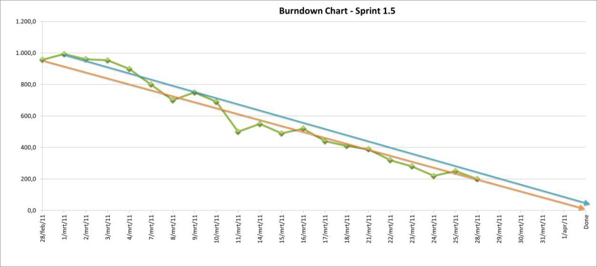

A Pragmatic Application of Scrum
Table of Contents
Agile Development
In the late 1990s, several development methodologies started to appear in response to the inevitable requirements churn in most software project requirements. They emphasised close communication between the engineering team, the business and users and an ability to respond quickly and deliver value frequently and predictably.
At a summit of a small group of practitioners of these methodologies a consensus on the principles and values that sum up what it means to be Agile was composed; the now famous Agile Manifesto:
The Manifesto for Agile Software Development
We are uncovering better ways of developing software by doing it and helping others do it.
Through this work we have come to value:
- Individuals and interactions over processes and tools
- Working software over comprehensive documentation
- Customer collaboration over contract negotiation
- Responding to change over following a plan
That is, while there is value in the items on the right, we value the items on the left more.
Supplementing this was the principles of agile development:
The Twelve Principles of Agile Software
We follow these principles:
- Our highest priority is to satisfy the customer through early and continuous delivery of valuable software.
- Welcome changing requirements, even late in development. Agile processes harness change for the customer’s competitive advantage.
- Deliver working software frequently, from a couple of weeks to a couple of months, with a preference to the shorter timescale.
- Business people and developers must work together daily throughout the project.
- Build projects around motivated individuals. Give them the environment and support they need, and trust them to get the job done.
- The most efficient and effective method of conveying information to and within a development team is face-to-face conversation.
- Working software is the primary measure of progress.
- Agile processes promote sustainable development. The sponsors, developers, and users should be able to maintain a constant pace indefinitely.
- Continuous attention to technical excellence and good design enhances agility.
- Simplicity–the art of maximizing the amount of work not done–is essential.
- The best architectures, requirements, and designs emerge from self-organizing teams.
- At regular intervals, the team reflects on how to become more effective, then tunes and adjusts its behaviour accordingly.
It is from these principles that Agile processes, practices and frameworks such as Scrum and XP have developed.
Lean Principles
While the Agile Manifesto is a result of a consolidation of what was starting to happen in software engineering, Lean development principles came as a result of adapting and applying principles borrowed from Lean Manufacturing. Lean Manufacturing was centred on “Preserving Value with Less Work” and came from ideas and philosophy that had been developed by Toyota in Japan.
Lean development can be summarised by seven principles:
- Eliminate Waste. Everything that is not adding value for the customer should be considered waste. This includes time delays and unnecessary features and process.
- Amplify Learning. Short iterations encourage rapid feedback. This helps the team and the customer learn about their product and process quickly.
- Decide as late as possible. As software development is always carried out with some uncertainty. Decisions should be delayed until they can be made on facts not assumptions. The capacity for change should be built into a system.
- Deliver as fast as possible. The sooner a product is delivered the sooner feedback can be obtained and the sooner value can be realised by the customer.
- Empower the team. Find good people and let them decide how to do their job.
- Build integrity in. Simplicity, Clarity, Minimal features resulting from refactoring continuously. Continuous integration of features should include thorough testing to verify the integrity.
- See the whole. Ensure communication between teams developing different components of a system to encourage an understanding of interactions between components.
Lean thinking can be summarised by: “Think big, act small, fail fast, learn rapidly”
Scrum
Scrum is a popular process framework based on short iterations of development known as sprints; its primary principle is Inspect and Adapt, a direct response to thinking in a lean way. It is the recognition that we need to learn as we have gaps in our knowledge about the product. It is the acknowledgement that we need to fail fast, but in relation to small actions. It is also the point at which waste can be identified and eliminated.
Inspect and Adapt is also a response to the agile principle of responding to change over following a plan. Inspection and adaptation is important enough in scrum to have a dedicated meeting every Sprint, the Retrospective.
The short iteration cycle, or Sprint, allows for a lot of the Lean principles to be applied, including delivering fast, deciding late and amplifying learning. In scrum, the Team is empowered to decide how it wants to work and integrity is encouraged by having multi-disciplined team members with an ability to develop and test.
The Daily Scrum, a point at which all team members notify each other of work done, work in progress and impediments applies the principle of Individuals and Interactions over process and tools and the Sprint Planning and Sprint Review encourage Customer Collaboration via the Product Owner, who is the customer representative to the Team.
In a scrum project a Scrummaster is often in place, not as a project manager but rather a mentor and coach to encourage the Inspect and Adapt principle and help remove any impediments external to the Team.
Process
The Scrum process is a relatively simple one, as shown below:
{kind=link}
The product is defined by a list of User Stories held in a Product Backlog. This is managed by the Product Owner.
Sprint Planning is carried out to determine, based on the Team’s throughput, known as Velocity, how much can be taken into the Sprint Backlog. Once this has been agreed by the Team, the Sprint, a fixed development iteration, can start.
As the Sprint goes on, every morning the Team will inform each other of work done, work in progress and Impediments in the Daily Scrum.
Once the Sprint is finished, the User Stories are demo’d to the Product Owner by the Team in the Sprint Review. The Product Owner then agrees which User Stories are done and removes them from the Product Backlog The total value of Effort for the done User Stories in the Sprint makes up the Team’s Velocity.
The Sprint is completed and the Team now hold a Retrospective where they discuss and identify what is going well, what is going badly, how to get the most out of what is going well and address what is going badly.
The Velocity, Product Backlog and actions from the Retrospective are all brought to the table again in the Sprint Planning to plan the next Sprint.
Roles
There are 3 roles in the Scrum Process:
Team
The Team is responsible for estimating and delivering the product to the customer, adapting its process and practices as it needs, ensuring the quality of its product and identifying problems and addressing them as they arise.
Product Owner
The Product Owner is responsible for representing the customer, maintaining the backlog, prioritising User Stories.
Scrummaster
The Scrummaster is responsible for coaching and encouraging agile thinking, unblocking the team of external impediments.
Artefacts
The four main artefacts in Scrum are as follows:
Product Backlog
The Product Backlog contains a prioritised and estimated list of all functionality required by the user. Low Priority stories are often coarse grained and undetailed in their nature and are often referred to as Epics. As the story moves up in priority it often needs to be broken up into smaller chunks so the resulting high priority items are fine grained and take minimal effort to complete. This is one of the essential components of scrum. Scrum cannot really happen in any sense without it, it is important that it is maintained in terms of estimates and prioritisation.
Release Burndown Chart
The Release Burndown Chart is a graph of progress through the backlog showing the total Effort left in the backlog at the end of each sprint. An example of a release burndown chart is shown below. The graph shows a reducing value that can be used to predict the release date.
[]
Sprint Backlog
The Sprint Backlog is similar to the Product Backlog but just the work committed by the Team for the current Sprint. This is usually split down into Tasks which have an associated estimated work remaining updated daily.
Sprint Burndown Chart
The Sprint Burndown Chart is similar to the Release Burndown chart but tracking the work remaining in the Sprint Backlog.
Events
Scrum typically has 5 meetings or events.
Sprint Planning
At sprint planning, the Team decides how much capacity they have for the next sprint, based on their previous Sprints’ Velocities. The Product Owner also decides on a goal for the Sprint. The Team then goes through the backlog with the PO, ensuring User Acceptance Criteria are up to date and estimates are correct, and commit to User Stories until the effort required to complete them matches their expected Velocity. This list is the Sprint Backlog.
The User Stories on the Sprint Backlog can then be split down into individual tasks and the remaining work estimated. Once the total remaining work has been estimated and both Team and Product owner are happy with the Sprint Backlog, the Team commits to doing the work in the Sprint and the remaining work value used as a starting point for the Sprint Burndown Chart.
Sprint
The sprint is when the work is carried out by the Team. The Sprint Burndown Chart can be used to monitor progress as the remaining work is reduced on a daily basis or more frequently. The Sprint backlog is fixed for the duration of the sprint and the Team gets on with the work, ensuring integrity and quality of the product they are producing.
Daily Scrum
At a fixed time every day of the Sprint, usually first thing in the morning, the team gets together for a quick stand-up face-to-face meeting to inform each other of yesterday’s progress, today’s tasks and any impediments that are blocking their progress on a particular task or story. The Daily Scrum is a very important part of scrum. It encourages communication, allows the team to identify issues early and impediments cleared as and when they happen.
Sprint Review
The purpose of the sprint review is for the Team to demo the User Stories to the Product Owner and any other potential users or user representatives. The Product Owner can try out the features, ask questions and possibly formulate new User Stories for scenarios not covered by the original User Acceptance Criteria. Once the Product Owner is satisfied that a User Story is complete, they mark the User Story as done and remove it from the backlog.
Once all User Stories are demo’d and marked as done or otherwise, the total effort for those User Stories is recorded as the Team’s Velocity for the Sprint.
Retrospective
After the Sprint Review the team carries out a Retrospective on the previous sprint, possibly including feedback from the Sprint Review. The retrospective can take many forms, but typically involves analysing good and bad things that are happening within the Team, Process etc. and identifying actions to resolve them.
Applying Scrum Principles and Practices to your Project
While some scrum practitioners are quite strict in their approach to applying scrum, I believe it is up to the team to determine how best to apply scrum to their project. I have put together some thoughts based on my experience as to when the items above are essential, eneficial, unnecessary or sometimes a hindrance.
If you make choices based on my experience, only time and your experience will tell whether they were the right ones. Therefore it may be appropriate to adopt the whole of scrum and then use the Retrospective to adapt the process as needed.
Roles
Product Owner
The product owner is the human interface to your users. This role is essential if you want to truly capture your users’ needs. It is possible that a single person could fulfil 2 roles, Product Owner and Scrummaster, although there will be a risk of encouraging the ompromising of agile and lean principles by that one person as they will be occupying 2 roles where conflicting interests may need to be resolved.
I would always recommend that for any development, even for a Team of 1, the Product Owner should be outside the team.
Team
It goes without saying that the team is essential, otherwise the work will just not be done. Ideally the team should have members that are multi-disciplined engineers, although this is not always possible. However the team should always have within it all the capability to design, develop and fully test User Stories and the product to a point where the Product Owner can agree to the User Story being done.
The ideal team size is said to be around 8 members. Much more than this will start to get difficult, but many principles can still be applied. The more people there are in a team, the more amplified the difference of opinion may become, also the amount of work in progress for the team as a whole increases meaning they will have to keep a closer eye on in sprint progress.
Smaller teams however have different problems. It is more affected by external distraction and often can be difficult to maintain a predictable velocity. The constant production of a Sprint Backlog that is rarely completed each sprint can be a real discouragement, especially to a small team starting out with scrum. Often at this time it is very important for the team to analyse the way that its working and adapt scrum to reduce the amount of wasted time.
Scrummaster
The scrummaster is an interesting role. Many people say that if a team is mature, understands scrum fully, is thinking in an agile and lean manner, then it shouldn’t need a scrummaster. The scrummaster generally acts as a coach and mentor, so is important for any team starting with scrum. Some teams even rotate the role of Scrummaster each sprint so everyone gets a chance to learn about applying scrum.
I would suggest that for teams of more than 1 then the role is needed, especially on start-up. Only when a team and product is mature is a scrummaster no longer needed, although even that is debatable, as the scrummaster often brings more benefits than just coaching
Artefacts
Product Backlog
The product backlog is essential, it defines the product, it defines the future of the product, it is the basis for estimating, prioritising and planning. The whole backlog should be prioritised and estimated, with regular ‘grooming’ sessions to ensure that it reflects priorities and expectations.
You cannot do scrum without a product backlog.
Release Burndown Chart
The release burndown chart is just a means of visualising the Product Backlog; it is a means to an end. When used alongside the Product Backlog, the Release Burndown Chart can be used to assist planning and strategy.
How you visualise the progress through the backlog is up to you. I would suggest a Release Burndown Chart as a starting point. Cumulative Flow Diagrams are also very useful for identifying lead times and bottlenecks, based on the change of work In progress and are a good substitute for Release Burndown Charts.
Sprint Backlog
The sprint backlog is a means of batching up work and tracking small incremental batches of work. For a large team I would suggest that in order for inspecting efficiency and tracking progress then this is an essential item
However, for small teams that have an unpredictable velocity the generation of the Sprint Backlog during Sprint Planning can be a frustrating experience. Perhaps working directly from the Product Backlog is more appropriate. Inspection of metrics gleaned from the changing state of the Product Backlog may be more appropriate in improving efficiency and tracking progress than a Sprint Backlog.
Sprint Burndown Chart
Much like the Release Burndown Chart, the Sprint Burndown Chart is just a means of visualising the progress through the Sprint Backlog. It is a very useful graph and I would recommend that if a Sprint Backlog is present, then a Sprint Burndown Chart is essential.
Events
The first thing I would say that presuming there is more than 1 person involved with a project (Product Owner and 1 man Team as a minimum) then these events are all necessary, how they are carried out depends very much on how the artefacts are being used. I have included some notes on each event.
Sprint Planning
Sprint planning is about just that, planning the Sprint. A goal should always be set for the sprint by the Product Owner; an expected target should also be set on the Product Backlog, based on the Velocity.
Whether a Sprint backlog should be used was mentioned briefly earlier.
The Sprint Planning meeting is often a good opportunity for some Product Backlog grooming in terms of estimating and prioritising.
Daily Scrum
The Daily scrum is there to encourage communication and keep everyone up to date. It requires minimal effort for small teams; it can even be done remotely if needed, although a lot of practitioners would discourage this.
The important thing is that everyone is up to date with what the team is doing and impediments are being reported and addressed.
Sprint Review
The sprint review is necessary to check that the work in the sprint backlog has been done. If you are adopting a more pipeline approach, just taking work directly from the product backlog, then it may be more appropriate for the Product Owner to review each User Story as the team completes them. That way, work in progress is also kept to a minimum.
Retrospective
Inspect and Adapt is an essential principle of scrum. It is important that you determine ways and means of analysing what’s going well and badly as a Team and the Retrospective is the best point at which to do this. As a 1 member team it is just as appropriate to carry out a retrospective yourself at the end of a sprint and record actions in order to improve the efficiency of the way you work.